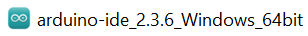
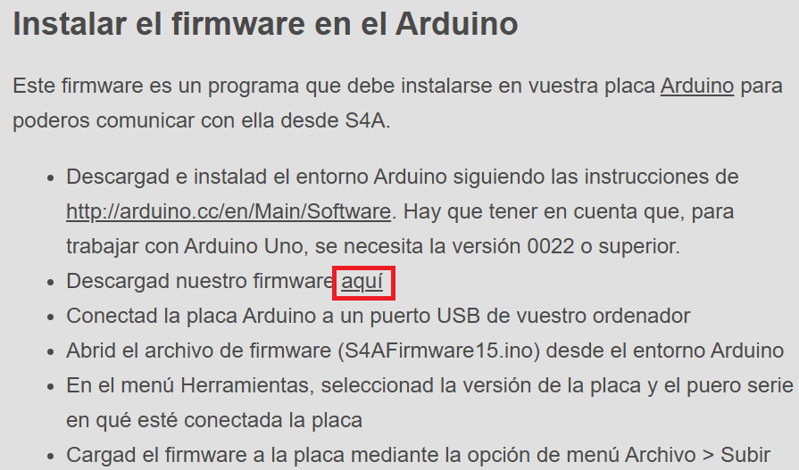
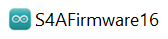
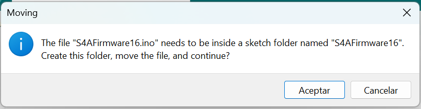

¿Qué es Arduino?
Arduino es una plataforma de hardware libre, basada en una placa con un microcontrolador y un entorno de desarrollo, diseñada para facilitar el uso de la electrónica en proyectos multidisciplinares.
Nos permite conectar el mundo de las computadores y microcontroladores al mundo físico a través de sensores y actuadores. Así se podrán desarrollar desde robots a cualquier otra cosa que nos imaginemos sin incurrir en un alto costo y perder mucho tiempo en el diseño.
La Placa Arduino UNO:
El Arduino Uno es una placa de microcontrolador de código abierto basado en el microchip ATmega328P y desarrollado por Arduino cc. La placa está equipada con conjuntos de pines de Entrada/Salidas digitales y analógicas que pueden conectarse a varias placas de expansión y otros circuitos.
Los pines se programan a través del Arduino IDE (Entorno dedesarrollo integrado) conectando la placa con la computadora mediante el cable USB. Es necesario instalar en la computadora el IDE de Arduino y en la placa microcontralora instalar el firmware que permitirá la comunicación entre ambos dispositivos.
Instalación del IDE de Arduino:
- Descargar el entorno de programación (IDE) de Arduino, disponible en: https://www.arduino.cc/en/software
- Hacer clic en el botón DOWNLOAD / DESCARGAR
- Una vez finalizado el proceso de descarga, ir a la carpeta de descargas y abrir el archivo: 
- Aceptar los Términos de la licencia, indicar para qué usuarios quieres instalar la aplicación y en qué carpeta se instalará (dejar la que asigna por defecto), pulsar el botón Instalar.
- Ejecutar la aplicación al terminar la instalación
- Aún no podrás probar tu Arduino UNO porque debes instalar un pequeño programa (Firmware) en la microcontroladora.
Instalación del Firmware:
- Abrir la página http://s4a.cat/index_es.html
- Hacer cic en el enlace aquí 
- Abrir desde la carpeta de descargas el archivo 
- Pulsar Aceptar en el mensaje que muestra 
- Observarás en el IDE de Arduino un código de unas 240 líneas. Puedes cambiar el idioma del IDE en el menú File > Preferences, se muestra una ventana con la pestaña Setting, seleccionar en language "español" y pulsar ok. Ahora debes conectar la placa UNO a la computadora a través del cable USB.
- Seleccionar en el menú Herramientas > Placa > Arduino AVR Boards > Arduino UNO que es el modelo de nuestra microcontroladora. Después, en ese mismo menú (Herramientas) indica el puerto COM que permitirá establecer la comunicación con la microcontroladora.
- Pulsa el botón Verificar para que se compile el código del firmware, mostrará en la cónsola cuánto espacio usa este sketch (programa) y cuánto espacio queda disponible en la memoria. Ahora, debes pulsar el botón para descargarlo en la tarjeta microcontroladora.
Ya tu Arduino UNO está listo para ser usado. Vamos a cargar un programa para comprobarlo: Ve al menú Archivo > Ejemplos > 01. Basics > Blink. Observarás que se abre el código en otra ventana. Debes seguir los pasos anteriores para cargar el Sketch en la microcontroladora. Notarás que el LED integrado de tu tarjeta UNO parpadea cada segundo.
Actividad:
Crear en tu carpeta digital de DRIVE una subcarpeta llamada S4A, dentro de la cual se subirá un documento con las respuestas a las siguientes consignas:
- ¿Qué es Arduino UNO?
- Describir las partes principales de la placa Arduino UNO (con imagen).
- Recomendaciones de uso para Arduino UNO
- ¿Qué es una protoboard?
- Características principales de una protoboard
- Partes de una protoboard (con imagen)
Recuerda colocar en el encabezado del documento Curso e integrantes; también colocar las fuentes de consulta al final. Fecha limite de entrega: tercera semana de agosto.
Importante: Este trabajo será considerado en la evaluación individual de la segunda semana de septiembre.